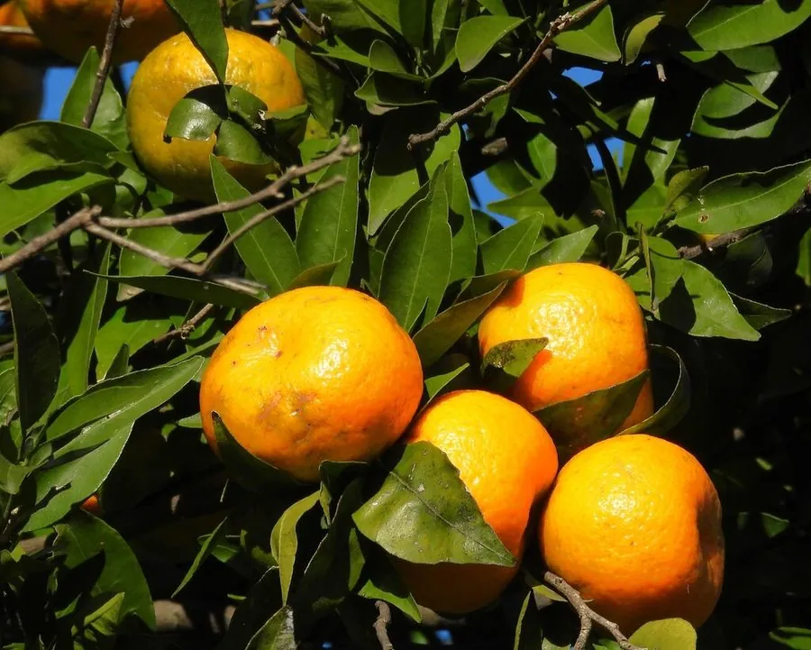

农作物与经济植物 · 植物界
柑橘 Citrus reticulata

柑橘是重要的亚热带果树，果实酸甜多汁、富含维生素 C，果皮可入药，栽培品种与类型十分丰富。
- 分类
- 门被子植物门纲双子叶植物纲目无患子目科芸香科属柑橘属
- 栖息环境
- 亚热带丘陵红壤与河谷冲积土，喜温暖湿润、光照充足
- 地理分布
- 原产中国南部与东南亚，现中国、巴西、美国等地广泛栽培
- 保护级别
- 暂无评估（栽培果树）
物种志
柑橘是芸香科常绿小乔木或灌木，高 2–5 m，枝上有刺，叶片革质，卵形或披针形，叶柄有窄翼，揉碎后有清香。花白色，五瓣，香气浓郁，单生或簇生。果实为柑果，扁圆形，果皮橙黄或橙红，容易剥离，果肉由许多汁胞组成，分瓣明显，酸甜多汁，内含种子。柑橘类植物含有丰富的挥发油和黄酮类成分。
柑橘类原产中国南部与东南亚，中国是柑橘的重要起源中心，栽培历史超过 4000 年，屈原的《橘颂》就是咏橘名篇；后经阿拉伯人传入欧洲，再扩散到美洲。柑橘喜温暖湿润、光照充足的亚热带气候，不耐严寒，适宜在排水良好的红壤或冲积土上栽培。果实可鲜食，也可加工成罐头、果汁和果酱；果皮可制陈皮，有理气化痰之效；橘络、枳壳等也入药。
形态与习性
- 树高2–5 m，枝上有刺
- 叶革质，叶柄有窄翼
- 花白色五瓣，香气浓郁
- 果实柑果，果皮容易剥离
- 主要用途鲜食、果汁与陈皮
- 原产地中国南部与东南亚
- 耐寒性不耐严寒
趣味知识
- 中国是柑橘的重要起源中心，《橘颂》两千多年前就在赞美橘子。
- 柑橘果皮的油囊里含有挥发油，剥皮时会喷出细雾。
- 陈皮由柑橘果皮晒干陈化而成，越陈香气越醇。